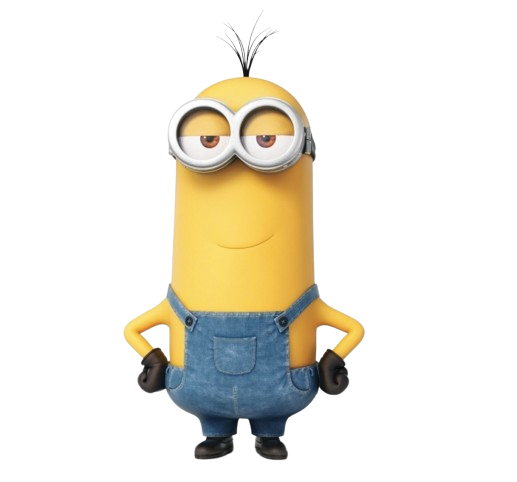
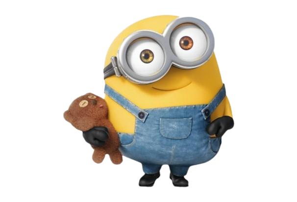
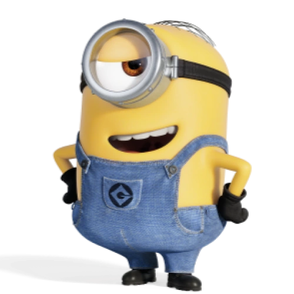

Kevin staat bekend als de leider en was de eerste die daadwerkelijk actie ondernam om een nieuwe kwaadaardige baas te vinden. (ook de langste van de groep)
Twan's
De model komt van de CMDA/model fork repository op GitHub.

Kevin staat bekend als de leider en was de eerste die daadwerkelijk actie ondernam om een nieuwe kwaadaardige baas te vinden. (ook de langste van de groep)

Het Bob (AKA King bob) is de meest kinderlijke van de drie, omdat hij een van de jongere Minions is en overal liefde in vindt. Hij heeft vaak zijn teddybeer Tim bij zich. Na verloop van tijd wordt hij volwassener, maar blijft hij net zo ondeugend als de rest van de Minions.

Stuart heeft een romantische kant en ziet zichzelf als een rockster met een elektrische gitaar in zijn handen.